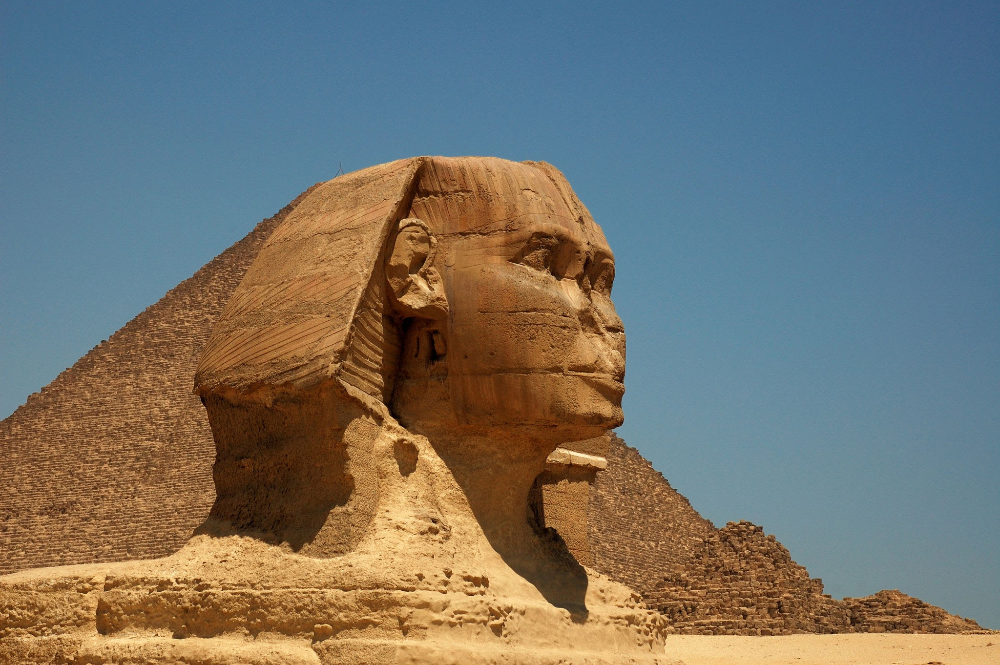
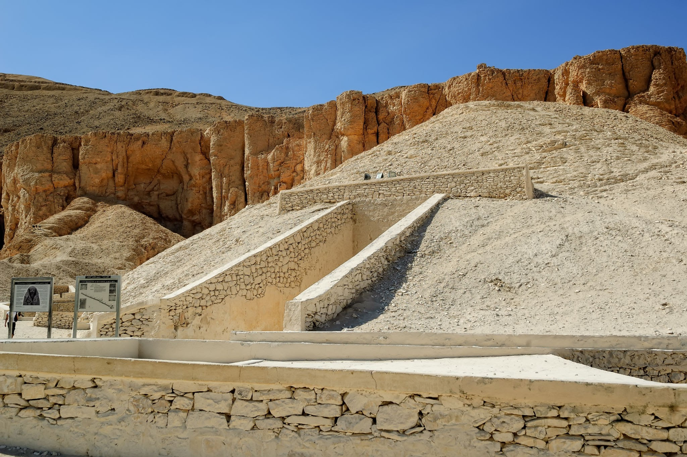

Pharaonic monuments in Egypt
These are some of my favourite Pharaonic monuments as:Great Sphinx of Giza and Valley of the Kings
1stGreat Sphinx of Giza is a limestone statue of a reclining sphinx, a mythical creature with the head of a human and the body of a lion. Facing directly from west to east, it stands on the Giza Plateau on the west bank of the Nile in Giza, Egypt. The face of the Sphinx appears to represent the pharaoh Khafre.
2ndvalley of the Kings also known as the Valley of the Gates of the Kings, is an area in Egypt where, for a period of nearly 500 years from the Eighteenth Dynasty to the Twentieth Dynasty, rock-cut tombs were excavated for pharaohs and powerful nobles under the New Kingdom of ancient Egypt.
